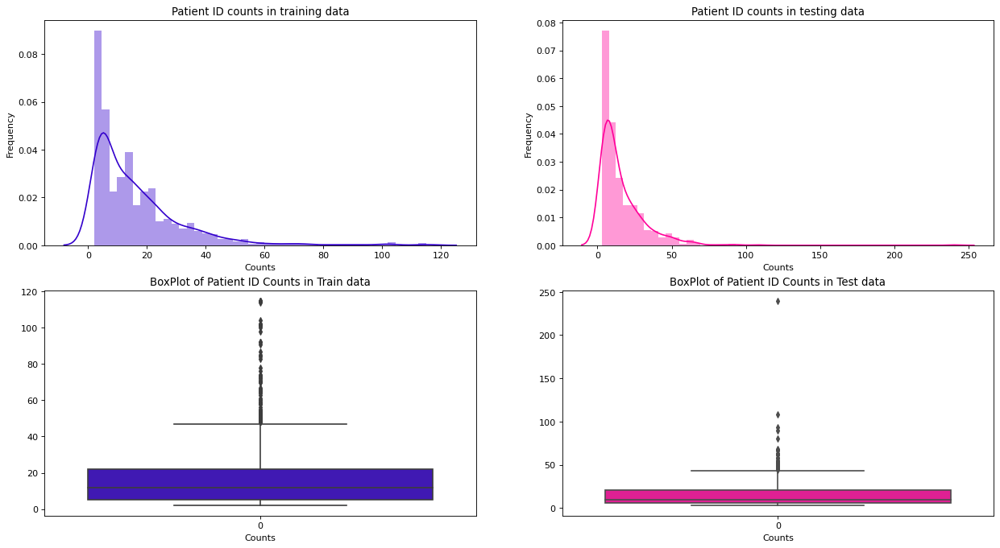
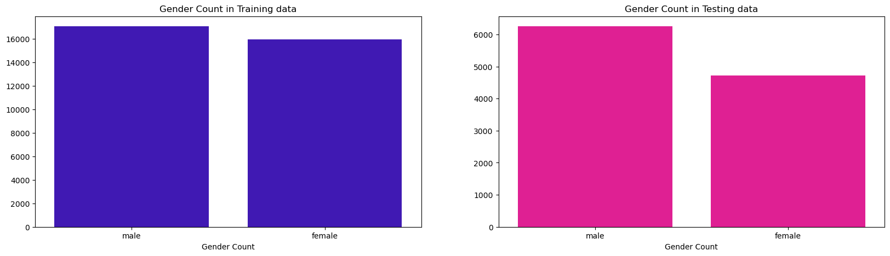
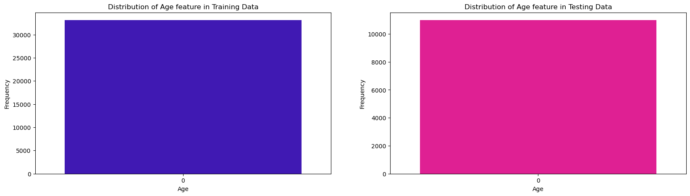
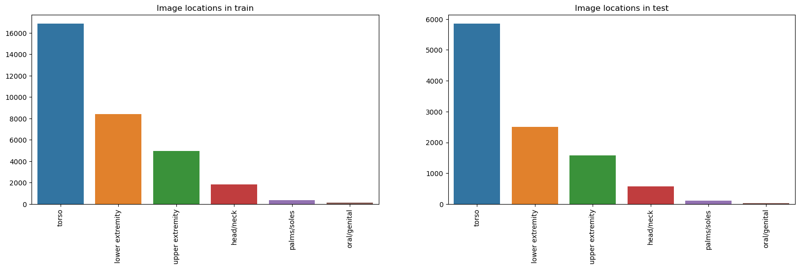
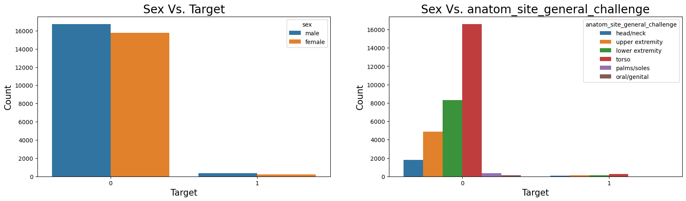
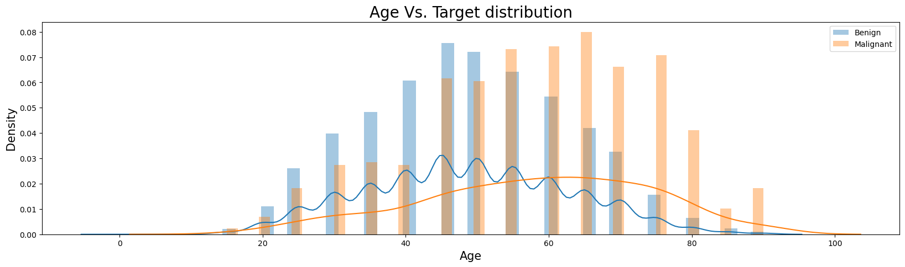

Code
import os
from pathlib import Path
## Creating Empty folders
scripts_file_path = Path("Scripts")
models_file_path = Path('Models')
scripts_file_path.mkdir(parents=True, exist_ok=True)
models_file_path.mkdir(parents=True, exist_ok=True)Chirag Sharma
January 9, 2023
We will first create 2 empty folders - Sripts (this will contain all the python modules for the trainig, validation & testing the model etc.) and Models (which will contain model checkpoint)
Note that we are running this notebook from this stage in kaggle kernel. To build/Replicate the model, follow the exact same steps mentioned in the notebook.
We first build our model in kaggle kernel because of the free computational resources, one can use google colab (free version) but it has certain limitations like it cannot handle the image size like we’ll be using in this project.
So we’ll utilize the kaggle computation resources to carry out this project.
First we will write/create python modules like for augmentations, config, training & validation loops, prediction_to_generate_on_test_dataset etc.
For training augmentations we’ll be using like flipping the image, creating random patches in the image, randomly rotating 90 degrees, Adjusting the brightness and contrast, adding noise in the images, Shifting and sheering the image and finally normalizing the statistics of the image (since we will be using transfer learning therefore we need to prepare the images in the same way they were trained on - depending on the specific model we want to use).
%%writefile Scripts/augmentations.py
from Scripts.config import Config
import albumentations as A
training_augmentations = A.Compose(
[
A.CoarseDropout(p=0.6),
A.RandomRotate90(p=0.6),
A.Flip(p=0.4),
A.OneOf(
[
A.RandomBrightnessContrast(brightness_limit=0.2, contrast_limit=0.3),
A.HueSaturationValue(
hue_shift_limit=20, sat_shift_limit=60, val_shift_limit=50
),
],
p=0.7,
),
A.OneOf([A.GaussianBlur(), A.GaussNoise()], p=0.65),
A.ShiftScaleRotate(
shift_limit=0.0625, scale_limit=0.35, rotate_limit=45, p=0.5
),
A.OneOf(
[
A.OpticalDistortion(p=0.3),
A.GridDistortion(p=0.1),
A.PiecewiseAffine(p=0.3),
],
p=0.7,
),
A.Normalize(
mean=Config.MEAN, std=Config.STD, max_pixel_value=255.0, always_apply=True
),
]
)
validation_augmentations = A.Compose(
[
A.Normalize(
mean=Config.MEAN, std=Config.STD, max_pixel_value=255.0, always_apply=True
)
]
)
testing_augmentations = A.Compose(
[
A.Normalize(
mean=Config.MEAN, std=Config.STD, max_pixel_value=255.0, always_apply=True
)
]
)Writing Scripts/augmentations.pyCreating a config module which will contain model configurations like number of epochs to run, size of an image, weight decay (for regularization) etc., it also contains the path of the files and folders of the data.
%%writefile Scripts/config.py
import torch
class Config:
EPOCHS = 5
IMG_SIZE = 512
ES_PATIENCE = 2
WEIGHT_DECAY = 0.001
VAL_BATCH_SIZE = 32 * 2
RANDOM_STATE = 1994
LEARNING_RATE = 5e-5
TRAIN_BATCH_SIZE = 32
MEAN = (0.485, 0.456, 0.406)
STD = (0.229, 0.224, 0.225)
TRAIN_COLS = [
"image_name",
"patient_id",
"sex",
"age_approx",
"anatom_site_general_challenge",
"target",
"tfrecord",
]
TEST_COLS = [
"image_name",
"patient_id",
"sex",
"age_approx",
"anatom_site_general_challenge",
]
DEVICE = "cuda" if torch.cuda.is_available() else "cpu"
################ Setting paths to data input ################
data_2020 = "../input/jpeg-melanoma-512x512/"
train_folder_2020 = data_2020 + "train/"
test_folder_2020 = data_2020 + "test/"
test_csv_path_2020 = data_2020 + "test.csv"
train_csv_path_2020 = data_2020 + "train.csv"
submission_csv_path = data_2020 + "sample_submission.csv"Writing Scripts/config.pyCreating a single dataset class to read the images (both training, validation & testing images), the function is capable of handling/reading the tabular features.
The function takes a dataframe, a list of tabular features (if we want to use for training) i.e., list of strings like ['sex_missing',anatom_site_general_challenge_head_neck','anatom_site_general_challenge_lower_extremity', anatom_site_general_challenge_torso','anatom_site_general_challenge_upper_extremity','scaled_age'] , the augmentations we want to use and finally whether the dataset is a training, validation or testing dataset.
For training and validation we set is_test=False and for testing we set is_test=True to differentiate between the datasets.
%%writefile Scripts/dataset.py
import torch
import numpy as np
import pandas as pd
import torch.nn as nn
from PIL import Image
from PIL import ImageFile
from typing import List, Callable
ImageFile.LOAD_TRUNCATED_IMAGES = True
class DatasetRetriever(nn.Module):
"""
Dataset class to read the images and tabular features from a
dataframe and returns the dictionary.
"""
def __init__(
self,
df: pd.DataFrame,
tabular_features: List[str] = None,
use_tabular_features: bool = False,
augmentations: Callable = None,
is_test: bool = False,
):
""" """
self.df = df
self.tabular_features = tabular_features
self.use_tabular_features = use_tabular_features
self.augmentations = augmentations
self.is_test = is_test
def __len__(self):
"""
Function returns the number of images in a dataframe.
"""
return len(self.df)
def __getitem__(self, index):
"""
Function the takes an images and it's corresponding
tabular/meta features & target feature (for training
and validation) and returns a dictionary, otherwise,
for test dataset it only returns a dictionary of
an image and tabular features.
"""
image_path = self.df["image_path"].iloc[index]
image = Image.open(image_path)
image = np.array(image)
if self.augmentations is not None:
augmented = self.augmentations(image=image)
image = augmented["image"]
image = np.transpose(image, (2, 0, 1)).astype(np.float32)
image = torch.tensor(image, dtype=torch.float)
if self.use_tabular_features:
if len(self.tabular_features) > 0 and self.is_test is False:
tabular_features = np.array(
self.df.iloc[index][self.tabular_features].values, dtype=np.float32
)
targets = self.df.target[index]
return {
"image": image,
"tabular_features": tabular_features,
"targets": torch.tensor(targets, dtype=torch.long),
}
elif len(self.tabular_features) > 0 and self.is_test is True:
tabular_features = np.array(
self.df.iloc[index][self.tabular_features].values, dtype=np.float32
)
return {"image": image, "tabular_features": tabular_features}
else:
if self.is_test is False:
targets = self.df.target[index]
return {
"image": image,
"targets": torch.tensor(targets, dtype=torch.long),
}
elif self.is_test is True:
return {"image": image}Writing Scripts/dataset.pyNow we create a model class to create a model instance of EfficientNet model.
Currently, this function is capable of reading the images only and not the tabular features.
Since in this project/notebook we are using the images only therefore, this function is good enough for that.
%%writefile Scripts/model.py
import torch
import torch.nn as nn
import torch.nn.functional as F
from efficientnet_pytorch import EfficientNet
import torch
import torch.nn as nn
import torch.nn.functional as F
from efficientnet_pytorch import EfficientNet
class Model(nn.Module):
"""
Class to instantiate EfficientNet-b5 model object which only
used images as inputs.
"""
def __init__(self, model_name="efficientnet-b5", pool_type=F.adaptive_avg_pool2d):
super().__init__()
self.pool_type = pool_type
self.model_name = model_name
self.backbone = EfficientNet.from_pretrained(model_name)
in_features = getattr(self.backbone, "_fc").in_features
self.classifier = nn.Linear(in_features, 1)
def forward(self, x):
features = self.pool_type(self.backbone.extract_features(x), 1)
features = features.view(x.size(0), -1)
return self.classifier(features)
# class Model(nn.Module):
# """
# Class to instantiate EfficientNet-b5 model object which uses images
# as well as tabular features as inputs.
# """
# def __init__(self, model_name='efficientnet-b5', pool_type=F.adaptive_avg_pool2d,
# num_tabular_features=0):
# super().__init__()
# self.pool_type = pool_type
# self.model_name = model_name
# self.backbone = EfficientNet.from_pretrained(model_name)
# in_features = getattr(self.backbone, "_fc").in_features
# if num_tabular_features>0:
# self.meta = nn.Sequential(
# nn.Linear(num_tabular_features, 512),
# nn.BatchNorm1d(512),
# nn.ReLU(),
# nn.Dropout(p=0.5),
# nn.Linear(512, 128),
# nn.BatchNorm1d(128),
# nn.ReLU())
# in_features += 128
# self.output = nn.Linear(in_features, 1)
# def forward(self, image, tabular_features=None):
# features = self.pool_type(self.backbone.extract_features(image), 1)
# cnn_features = features.view(image.size(0),-1)
# if num_tabular_features>0:
# tabular_features = self.meta(tabular_features)
# all_features = torch.cat((cnn_features, tabular_features), dim=1)
# output = self.output(all_features)
# return output
# else:
# output = self.output(cnn_features)
# return outputWriting Scripts/model.pyWe create a validation function that predicts and generates probabilities only on the validation corresponding to a specific fold.
This function might be useful in come cases. This function is capable of running on a single gpu or multi-gpu device as well as on cpu.
%%writefile Scripts/predict_on_validation_data.py
import os
import torch
from Scripts.config import Config
import pandas as pd
import torch.nn as nn
from Scripts.model import Model
from Scripts.dataset import DatasetRetriever
from Scripts.augmentations import validation_augmentations
from torch.utils.data import DataLoader
def predict_on_validation_dataset(
validation_df: pd.DataFrame, model_path: str, use_tabular_features: bool = False
):
"""
This function generates prediction probabilities on the
validation dataset and returns a submission.csv file.
Args:
validation_dataset = validation_dataframe.
model_path = location where model state_dict is located.
use_tabular_features: whether to use the tabular features
or not.
"""
valid_dataset = DatasetRetriever(
df=validation_df,
tabular_features=None,
use_tabular_features=False,
augmentations=validation_augmentations,
is_test=True,
)
valid_dataloader = DataLoader(
dataset=valid_dataset,
batch_size=Config.VAL_BATCH_SIZE,
shuffle=False,
num_workers=os.cpu_count(),
)
valid_predictions = []
if torch.cuda.device_count() in (0, 1):
model = Model().to(
Config.DEVICE
)
elif torch.cuda.device_count() > 1:
model = Model().to(
Config.DEVICE
)
model = nn.DataParallel(model)
model.load_state_dict(torch.load(model_path))
model.eval()
with torch.inference_mode():
for _, data in enumerate(valid_dataloader):
if use_tabular_features:
data["image"], data["tabular_features"] = data["image"].to(
Config.DEVICE, dtype=torch.float
), data["tabular_features"].to(Config.DEVICE, dtype=torch.float)
y_logits = model(data["image"], data["tabular_features"])
else:
data["image"] = data["image"].to(Config.DEVICE, dtype=torch.float)
y_logits = model(data["image"]).squeeze(dim=0)
valid_probs = torch.sigmoid(y_logits).detach().cpu().numpy()
valid_predictions.extend(valid_probs)
valid_predictions = [
valid_predictions[img].item() for img in range(len(valid_predictions))
]
return valid_predictionsWriting Scripts/predict_on_validation_data.pyThis below function is used to generate the prediction probabilities on the testing dataset provided for the competition and generates a submission.csv file for the public and private leaderboard results.
%%writefile Scripts/predict_on_test.py
import os
import torch
from Scripts.config import Config
import pandas as pd
import torch.nn as nn
from Scripts.model import Model
from Scripts.dataset import DatasetRetriever
from Scripts.augmentations import testing_augmentations
from torch.utils.data import DataLoader
def predict_on_test_and_generate_submission_file(
test_df: pd.DataFrame, model_path: str, use_tabular_features: bool = False
):
"""
This function generates prediction probabilities on the
test dataset and returns a submission.csv file.
Args:
test_df = test_dataframe.
model_path = location where model state_dict is located.
use_tabular_features: whether to use the tabular features
or not.
"""
test_dataset = DatasetRetriever(
df=test_df,
tabular_features=None,
use_tabular_features=False,
augmentations=testing_augmentations,
is_test=True,
)
test_dataloader = DataLoader(
dataset=test_dataset,
batch_size=Config.VAL_BATCH_SIZE,
shuffle=False,
num_workers=os.cpu_count(),
)
test_predictions = []
if torch.cuda.device_count() in (0, 1):
model = Model().to(
Config.DEVICE
)
elif torch.cuda.device_count() > 1:
model = Model().to(
Config.DEVICE
)
model = nn.DataParallel(model)
model.load_state_dict(torch.load(model_path))
model.eval()
with torch.inference_mode():
for _, data in enumerate(test_dataloader):
if use_tabular_features:
data["image"], data["tabular_features"] = data["image"].to(
Config.DEVICE, dtype=torch.float
), data["tabular_features"].to(Config.DEVICE, dtype=torch.float)
y_logits = model(data["image"], data["tabular_features"])
else:
data["image"] = data["image"].to(Config.DEVICE, dtype=torch.float)
y_logits = model(data["image"]).squeeze(dim=0)
test_probs = torch.sigmoid(y_logits).detach().cpu().numpy()
test_predictions.extend(test_probs)
submission_df = pd.read_csv(Config.submission_csv_path)
test_predictions = [
test_predictions[img].item() for img in range(len(test_predictions))
]
submission_df["target"] = test_predictions
submission_df.to_csv("../working/submission.csv", index=False)Writing Scripts/predict_on_test.pyNow, we create a train_model module which has a run_model function that takes a fold number and the training dataframe.
The function creates training and validation dataframe , then we create training and validation datasets which only reads images and no tabular features, next we initialize seed (for reproduciblity of results), model object, loss function, optimizer, scheduler and a scaler object (for mixed precision).
%%writefile Scripts/train_model.py
import os
import torch
from Scripts.config import Config
import pandas as pd
import torch.nn as nn
from Scripts.model import Model
import torch.cuda.amp as amp
from Scripts.utils import create_folds
from Scripts.utils import seed_everything
from Scripts.dataset import DatasetRetriever
from timeit import default_timer as timer
from Scripts.training_and_validation_loops import train
from torch.utils.data import Dataset, DataLoader
from Scripts.augmentations import training_augmentations, validation_augmentations
def run_model(fold, train_df):
train_df = create_folds(train_df=train_df)
train_data = train_df.loc[train_df["fold"] != fold].reset_index(drop=True)
valid_data = train_df.loc[train_df["fold"] == fold].reset_index(drop=True)
validation_targets = valid_data["target"]
train_dataset = DatasetRetriever(
df=train_data,
tabular_features=None,
use_tabular_features=False,
augmentations=training_augmentations,
is_test=False,
)
valid_dataset = DatasetRetriever(
df=valid_data,
tabular_features=None,
use_tabular_features=False,
augmentations=validation_augmentations,
is_test=False,
)
training_dataloader = DataLoader(
dataset=train_dataset,
batch_size=Config.TRAIN_BATCH_SIZE,
shuffle=True,
num_workers=os.cpu_count(),
)
validation_dataloader = DataLoader(
dataset=valid_dataset,
batch_size=Config.VAL_BATCH_SIZE,
shuffle=False,
num_workers=os.cpu_count(),
)
seed_everything(Config.RANDOM_STATE)
if torch.cuda.device_count() in (0, 1):
model = Model().to(
Config.DEVICE
)
elif torch.cuda.device_count() > 1:
model = Model().to(
Config.DEVICE
)
model = nn.DataParallel(model)
loss = nn.BCEWithLogitsLoss()
optimizer = torch.optim.AdamW(
params=model.parameters(),
lr=Config.LEARNING_RATE,
weight_decay=Config.WEIGHT_DECAY,
)
scheduler = torch.optim.lr_scheduler.ReduceLROnPlateau(
optimizer=optimizer,
mode="max",
factor=0.2,
patience=2,
threshold=1e-3,
verbose=True,
)
scaler = amp.GradScaler()
start_time = timer()
model_save_path = f"../working/Models/efficientnet_b5_checkpoint_fold_{fold}.pt"
model_results = train(
model=model,
train_dataloader=training_dataloader,
valid_dataloader=validation_dataloader,
loss_fn=loss,
optimizer=optimizer,
scheduler=scheduler,
device=Config.DEVICE,
scaler=scaler,
epochs=Config.EPOCHS,
es_patience=2,
model_save_path=model_save_path,
validation_targets=validation_targets,
)
end_time = timer()
print(f"Total training time: {end_time-start_time:.3f} seconds")Writing Scripts/train_model.pyRegular pytorch training and validation loops epochs for a single epoch and finally for N number of epochs a train function.
%%writefile Scripts/training_and_validation_loops.py
import torch
import numpy as np
from tqdm import tqdm
import torch.cuda.amp as amp
from Scripts.utils import EarlyStopping
from sklearn.metrics import roc_auc_score
def train_one_epoch(
model, dataloader, loss_fn, optimizer, device, scaler, use_tabular_features=False
):
"""
Function takes a model instance, dataloader, loss function, an optimizer, device
(on which device should you want to run the model on i.e., GPU or CPU)
, scaler (for mixed precision) and whether to use tabular features or not.
This function runs/passes the images and tabular features for a single epoch
and returns the loss value on training dataset.
"""
train_loss = 0
model.train()
for data in dataloader:
optimizer.zero_grad()
if use_tabular_features:
data["image"], data["tabular_features"], data["targets"] = (
data["image"].to(device, dtype=torch.float),
data["tabular_features"].to(device, dtype=torch.float),
data["targets"].to(device, dtype=torch.float),
)
with amp.autocast():
y_logits = model(data["image"], data["tabular_features"]).squeeze(dim=0)
loss = loss_fn(y_logits, data["targets"].view(-1, 1))
else:
data["image"], data["targets"] = data["image"].to(
device, dtype=torch.float
), data["targets"].to(device, dtype=torch.float)
with amp.autocast():
y_logits = model(data["image"]).squeeze(dim=0)
loss = loss_fn(y_logits, data["targets"].view(-1, 1))
train_loss += loss.item()
scaler.scale(loss).backward()
scaler.step(optimizer)
scaler.update()
train_loss = train_loss / len(dataloader)
return train_loss
def validate_one_epoch(model, dataloader, loss_fn, device, use_tabular_features=False):
"""
Function takes a model instance, dataloader, loss function, device
(on which device should you want to run the model on i.e., GPU or CPU)
and whether to use tabular features or not.
This function runs/passes the images and tabular features for a single epoch
and returns the loss value & final predictions on the validation dataset.
"""
valid_loss, final_predictions = 0, []
model.eval()
with torch.inference_mode():
for data in dataloader:
if use_tabular_features:
data["image"], data["tabular_features"], data["targets"] = (
data["image"].to(device, dtype=torch.float),
data["tabular_features"].to(device, dtype=torch.float),
data["targets"].to(device, dtype=torch.float),
)
y_logits = model(data["image"], data["tabular_features"]).squeeze(dim=0)
else:
data["image"], data["targets"] = data["image"].to(
device, dtype=torch.float
), data["targets"].to(device, dtype=torch.float)
y_logits = model(data["image"]).squeeze(dim=0)
loss = loss_fn(y_logits, data["targets"].view(-1, 1))
valid_loss += loss.item()
valid_probs = torch.sigmoid(y_logits).detach().cpu().numpy()
final_predictions.extend(valid_probs)
valid_loss = valid_loss / len(dataloader)
return valid_loss, final_predictions
def train(
model,
train_dataloader,
valid_dataloader,
loss_fn,
optimizer,
scheduler,
device,
scaler,
epochs,
es_patience,
model_save_path,
validation_targets,
):
"""
This function takes a model instance, training dataloader,
validation dataloader, loss_fn, optimizer, scheduler, device,
scaler (object, for mixed precision), epochs (for how many epochs
to run the model), es_patience (number of epochs to wait after which
the model should stop training), model_save_path (where to save the
model to), validation_targets (used for the calculation of the AUC
score) and returns a dictionary object which has training loss,
validation loss and validation AUC score.
"""
results = {"train_loss": [], "valid_loss": [], "valid_auc": []}
early_stopping = EarlyStopping(
patience=es_patience, verbose=True, path=model_save_path
)
for epoch in tqdm(range(epochs)):
train_loss = train_one_epoch(
model=model,
dataloader=train_dataloader,
loss_fn=loss_fn,
optimizer=optimizer,
device=device,
scaler=scaler,
use_tabular_features=False,
)
valid_loss, valid_predictions = validate_one_epoch(
model=model,
dataloader=valid_dataloader,
loss_fn=loss_fn,
device=device,
use_tabular_features=False,
)
valid_predictions = np.vstack(valid_predictions).ravel()
valid_auc = roc_auc_score(y_score=valid_predictions, y_true=validation_targets)
scheduler.step(valid_auc)
early_stopping(valid_loss, model)
if early_stopping.early_stop:
print("Early Stopping")
break
model.load_state_dict(torch.load(model_save_path))
print(
f"Epoch : {epoch+1} | "
f"train_loss : {train_loss:.4f} | "
f"valid_loss : {valid_loss:.4f} | "
f"valid_auc : {valid_auc:.4f} "
)
results["train_loss"].append(train_loss)
results["valid_loss"].append(valid_loss)
results["valid_auc"].append(valid_auc)
return resultsWriting Scripts/training_and_validation_loops.pyIn the utils module we write some useful functions like create_folds (which will divide the training dataset into 5 equal parts and remove duplicate images from the dataset)
seed_everything (for reproducing the results)
EarlyStopping class (used to stop model training if our model performance on validation dataset starts to decline), plot_loss_curves (for plotting the training and validation loss and auc_scores for each epoch)
RareLabelCategoryEncoder (class that combines the category/categories of a feature that appears in the dataset for a certain percentage of times like 5% of the time etc. into a single category called Rare)
OutlierTreatment (class to cap the values of a feature by learning the lower quantile and upper_quantile values of a feature from the dataset (X) in the fit method and caps(transforms) the feature values in the dataset (x) passed in the transformed method).
%%writefile Scripts/utils.py
import os
import torch
import random
import numpy as np
import pandas as pd
from typing import List
import matplotlib.pyplot as plt
from sklearn.base import BaseEstimator, TransformerMixin
def create_folds(train_df):
"""
Function that folds in the training data and removes duplicate
images from the training data.
"""
train_df = train_df.loc[train_df["tfrecord"] != -1].reset_index(drop=True)
train_df["fold"] = train_df["tfrecord"] % 5
return train_df
def seed_everything(seed: int):
"""
Function to set seed and to make reproducible results.
Args:
seed (int): like 42
"""
random.seed(seed)
os.environ["PYTHONHASHSEED"] = str(seed)
np.random.seed(seed)
torch.manual_seed(seed)
torch.cuda.manual_seed(seed)
torch.backends.cudnn.deterministic = True
torch.backends.cudnn.benchmark = False
class EarlyStopping:
"""Early stops the training if validation loss doesn't improve after a given patience.
Directly borrowed from https://github.com/Bjarten/early-stopping-pytorch/blob/master/pytorchtools.py
"""
def __init__(
self,
path: str,
patience: int = 7,
verbose: bool = False,
delta: int = 0,
trace_func=print,
):
"""
Args:
patience (int): How long to wait after last time validation loss improved.
Default: 7
verbose (bool): If True, prints a message for each validation loss improvement.
Default: False
delta (float): Minimum change in the monitored quantity to qualify as an improvement.
Default: 0
path (str): Path for the checkpoint to be saved to.
Default: 'checkpoint.pt'
trace_func (function): trace print function.
Default: print
"""
self.patience = patience
self.verbose = verbose
self.counter = 0
self.best_score = None
self.early_stop = False
self.val_loss_min = np.Inf
self.delta = delta
self.path = path
self.trace_func = trace_func
def __call__(self, val_loss, model):
score = -val_loss
if self.best_score is None:
self.best_score = score
self.save_checkpoint(val_loss, model)
elif score < self.best_score + self.delta:
self.counter += 1
self.trace_func(
f"EarlyStopping counter: {self.counter} out of {self.patience}"
)
if self.counter >= self.patience:
self.early_stop = True
else:
self.best_score = score
self.save_checkpoint(val_loss, model)
self.counter = 0
def save_checkpoint(self, val_loss, model):
"""Saves model when validation loss decrease."""
if self.verbose:
self.trace_func(
f"Validation loss decreased ({self.val_loss_min:.6f} --> {val_loss:.6f}). Saving model ..."
)
torch.save(obj=model.state_dict(), f=self.path)
self.val_loss_min = val_loss
def plot_loss_curves(results: dict):
"""
Function to plot training & validation loss curves & validation AUC
Args:
results (dict): A dictionary of training loss, validation_loss &
validation AUC score.
"""
loss = results["train_loss"]
valid_loss = results["valid_loss"]
# Get the accuracy values of the results dictionary (training and test)
valid_auc = results["valid_auc"]
# Figure out how many epochs there were
epochs = range(len(results["train_loss"]))
# Setup a plot
plt.figure(figsize=(15, 7))
# Plot loss
plt.subplot(1, 2, 1)
plt.plot(epochs, loss, label="train_loss")
plt.plot(epochs, valid_loss, label="valid_loss")
plt.title("Loss")
plt.xlabel("Epochs")
plt.legend()
# Plot accuracy
plt.subplot(1, 2, 2)
plt.plot(epochs, valid_auc, label="valid_auc")
plt.title("AUC Score")
plt.xlabel("Epochs")
plt.legend()
class RareLabelCategoryEncoder(BaseEstimator, TransformerMixin):
"""
Class to combine rare categories of a categorical variable
where a category appearing less than a certain percentage
(as a threshold).
Example: a category/categories appearing less than 5% of the
times are combined a single category called rare.
"""
def __init__(self, variables: List, tol=0.05):
"""
Args:
variables (List): A list of variables for which we want
to combine into rare categories.
tol (int): A Threshold/Tolerance below which we want to
consider a category of a feature as rare.
"""
if not isinstance(variables, list):
raise ValueError("Variables should be a list")
self.tol = tol
self.variables = variables
def fit(self, x: pd.DataFrame):
"""
This function learns all the values/categories & the
percentage of times it appears in a feature in the
dataset passed while using this method.
Args:
X : From this dataset the fit function learns and
stores the number of times a category appears in
the dataset
"""
self.encoder_dict_ = {}
for var in self.variables:
t = pd.Series(x[var]).value_counts(normalize=True)
self.encoder_dict_[var] = list(t[t >= self.tol].index)
return self
def transform(self, x: pd.DataFrame):
"""
X (pd.DataFrame): Transform/Combines the categories of each
features passed into the variables list on the dataset passed
in this method and returns the transformed dataset.
"""
x = x.copy()
for var in self.variables:
x[var] = np.where(x[var].isin(self.encoder_dict_[var]), x[var], "Other")
return x
class OutlierTreatment(BaseEstimator, TransformerMixin):
"""
Class to handle outliers in a continous feature.
"""
def __init__(
self, variable: str, upper_quantile: float = None, lower_quantile: float = None
):
"""
Args:
variables (str): A variable to cap the upper and
lower boundaries of.
upper_quantile (float): A maximum value beyond which all the
values of a feature are capped at.
lower_quantile (float): A minimum value that are lower than
of the feature are capped at.
"""
if not isinstance(variable, str):
raise ValueError("Variable should be a string type.")
self.upper_quantile = upper_quantile
self.variable = variable
self.lower_quantile = lower_quantile
def fit(self, x: pd.DataFrame):
"""
This function learns the lower & upper quantiles of a feature
present in the dataset x.
"""
self.upper_quantile = x[self.variable].quantile(self.upper_quantile)
self.lower_quantile = x[self.variable].quantile(self.lower_quantile)
return self
def transform(self, x: pd.DataFrame):
"""
This function caps the upper and lower quantiles in the dataframe
x with the values learnt in the dataframe passed in fit() method.
"""
x = x.copy()
x[self.variable] = np.where(
x[self.variable] > self.upper_quantile,
self.upper_quantile,
np.where(
x[self.variable] < self.lower_quantile,
self.lower_quantile,
x[self.variable],
),
)
return xWriting Scripts/utils.py__init__.py to make the Scripts folder a package.This will contain all the packages required for modeling/training the model.
Requirement already satisfied: torch==1.13.0 in /opt/conda/lib/python3.7/site-packages (from -r requirements.txt (line 2)) (1.13.0)
Requirement already satisfied: torchvision==0.14.0 in /opt/conda/lib/python3.7/site-packages (from -r requirements.txt (line 3)) (0.14.0)
Collecting efficientnet_pytorch==0.7.1
Downloading efficientnet_pytorch-0.7.1.tar.gz (21 kB)
Preparing metadata (setup.py) ... done
Collecting albumentations==1.2.1
Downloading albumentations-1.2.1-py3-none-any.whl (116 kB)
━━━━━━━━━━━━━━━━━━━━━━━━━━━━━━━━━━━━━━━ 116.7/116.7 kB 5.3 MB/s eta 0:00:00
Collecting tqdm==4.65.0
Downloading tqdm-4.65.0-py3-none-any.whl (77 kB)
━━━━━━━━━━━━━━━━━━━━━━━━━━━━━━━━━━━━━━━━ 77.1/77.1 kB 8.9 MB/s eta 0:00:00
Collecting Pillow==8.4.0
Downloading Pillow-8.4.0-cp37-cp37m-manylinux_2_17_x86_64.manylinux2014_x86_64.whl (3.1 MB)
━━━━━━━━━━━━━━━━━━━━━━━━━━━━━━━━━━━━━━━━ 3.1/3.1 MB 32.8 MB/s eta 0:00:0000:0100:01
Requirement already satisfied: typing-extensions in /opt/conda/lib/python3.7/site-packages (from torch==1.13.0->-r requirements.txt (line 2)) (4.4.0)
Requirement already satisfied: requests in /opt/conda/lib/python3.7/site-packages (from torchvision==0.14.0->-r requirements.txt (line 3)) (2.28.2)
Requirement already satisfied: numpy in /opt/conda/lib/python3.7/site-packages (from torchvision==0.14.0->-r requirements.txt (line 3)) (1.21.6)
Requirement already satisfied: scipy in /opt/conda/lib/python3.7/site-packages (from albumentations==1.2.1->-r requirements.txt (line 6)) (1.7.3)
Requirement already satisfied: scikit-image>=0.16.1 in /opt/conda/lib/python3.7/site-packages (from albumentations==1.2.1->-r requirements.txt (line 6)) (0.19.3)
Requirement already satisfied: opencv-python-headless>=4.1.1 in /opt/conda/lib/python3.7/site-packages (from albumentations==1.2.1->-r requirements.txt (line 6)) (4.5.4.60)
Requirement already satisfied: PyYAML in /opt/conda/lib/python3.7/site-packages (from albumentations==1.2.1->-r requirements.txt (line 6)) (6.0)
Requirement already satisfied: qudida>=0.0.4 in /opt/conda/lib/python3.7/site-packages (from albumentations==1.2.1->-r requirements.txt (line 6)) (0.0.4)
Requirement already satisfied: scikit-learn>=0.19.1 in /opt/conda/lib/python3.7/site-packages (from qudida>=0.0.4->albumentations==1.2.1->-r requirements.txt (line 6)) (1.0.2)
Requirement already satisfied: tifffile>=2019.7.26 in /opt/conda/lib/python3.7/site-packages (from scikit-image>=0.16.1->albumentations==1.2.1->-r requirements.txt (line 6)) (2021.11.2)
Requirement already satisfied: imageio>=2.4.1 in /opt/conda/lib/python3.7/site-packages (from scikit-image>=0.16.1->albumentations==1.2.1->-r requirements.txt (line 6)) (2.25.0)
Requirement already satisfied: PyWavelets>=1.1.1 in /opt/conda/lib/python3.7/site-packages (from scikit-image>=0.16.1->albumentations==1.2.1->-r requirements.txt (line 6)) (1.3.0)
Requirement already satisfied: networkx>=2.2 in /opt/conda/lib/python3.7/site-packages (from scikit-image>=0.16.1->albumentations==1.2.1->-r requirements.txt (line 6)) (2.6.3)
Requirement already satisfied: packaging>=20.0 in /opt/conda/lib/python3.7/site-packages (from scikit-image>=0.16.1->albumentations==1.2.1->-r requirements.txt (line 6)) (23.0)
Requirement already satisfied: idna<4,>=2.5 in /opt/conda/lib/python3.7/site-packages (from requests->torchvision==0.14.0->-r requirements.txt (line 3)) (3.4)
Requirement already satisfied: urllib3<1.27,>=1.21.1 in /opt/conda/lib/python3.7/site-packages (from requests->torchvision==0.14.0->-r requirements.txt (line 3)) (1.26.14)
Requirement already satisfied: charset-normalizer<4,>=2 in /opt/conda/lib/python3.7/site-packages (from requests->torchvision==0.14.0->-r requirements.txt (line 3)) (2.1.1)
Requirement already satisfied: certifi>=2017.4.17 in /opt/conda/lib/python3.7/site-packages (from requests->torchvision==0.14.0->-r requirements.txt (line 3)) (2022.12.7)
Requirement already satisfied: threadpoolctl>=2.0.0 in /opt/conda/lib/python3.7/site-packages (from scikit-learn>=0.19.1->qudida>=0.0.4->albumentations==1.2.1->-r requirements.txt (line 6)) (3.1.0)
Requirement already satisfied: joblib>=0.11 in /opt/conda/lib/python3.7/site-packages (from scikit-learn>=0.19.1->qudida>=0.0.4->albumentations==1.2.1->-r requirements.txt (line 6)) (1.2.0)
Building wheels for collected packages: efficientnet_pytorch
Building wheel for efficientnet_pytorch (setup.py) ... done
Created wheel for efficientnet_pytorch: filename=efficientnet_pytorch-0.7.1-py3-none-any.whl size=16446 sha256=d870e4ba77c41d05a67b458d1a03a108aaee250b6f63fca1cad356a67702a3af
Stored in directory: /root/.cache/pip/wheels/96/3f/5f/13976445f67f3b4e77b054e65f7f4c39016e92e8358fe088db
Successfully built efficientnet_pytorch
Installing collected packages: tqdm, Pillow, efficientnet_pytorch, albumentations
Attempting uninstall: tqdm
Found existing installation: tqdm 4.64.1
Uninstalling tqdm-4.64.1:
Successfully uninstalled tqdm-4.64.1
Attempting uninstall: Pillow
Found existing installation: Pillow 9.4.0
Uninstalling Pillow-9.4.0:
Successfully uninstalled Pillow-9.4.0
Attempting uninstall: albumentations
Found existing installation: albumentations 1.3.0
Uninstalling albumentations-1.3.0:
Successfully uninstalled albumentations-1.3.0
ERROR: pip's dependency resolver does not currently take into account all the packages that are installed. This behaviour is the source of the following dependency conflicts.
pandas-profiling 3.6.2 requires tqdm<4.65,>=4.48.2, but you have tqdm 4.65.0 which is incompatible.
Successfully installed Pillow-9.4.0 albumentations-1.2.1 efficientnet_pytorch-0.7.1 tqdm-4.65.0
WARNING: Running pip as the 'root' user can result in broken permissions and conflicting behaviour with the system package manager. It is recommended to use a virtual environment instead: https://pip.pypa.io/warnings/venvBefore jumping right into the modeling and see the numbers go down or go up, it’s good to look at the data and try to make sense out of it.
We’ll do the same here as well, we will look at the distribution of each tabular features we have in the training and testing datasets.
import os
import pandas as pd
import seaborn as sns
import warnings
warnings.filterwarnings('ignore')
import matplotlib.pyplot as plt
from Scripts.config import Config
## Looking at the Data
train_df = pd.read_csv(Config.train_csv_path_2020,
usecols=Config.TRAIN_COLS)
test_df = pd.read_csv(Config.test_csv_path_2020,
usecols=Config.TEST_COLS)
## Creating Image_Path for each images in 2019 & 2020 training datasets
train_df['image_path'] = os.path.join(Config.train_folder_2020) + train_df['image_name'] + ".jpg"
test_df['image_path'] = os.path.join(Config.test_folder_2020) + test_df['image_name'] + ".jpg"
train_df.head()| image_name | patient_id | sex | age_approx | anatom_site_general_challenge | target | tfrecord | image_path | |
|---|---|---|---|---|---|---|---|---|
| 0 | ISIC_2637011 | IP_7279968 | male | 45.0 | head/neck | 0 | 0 | ../input/jpeg-melanoma-512x512/train/ISIC_2637... |
| 1 | ISIC_0015719 | IP_3075186 | female | 45.0 | upper extremity | 0 | 0 | ../input/jpeg-melanoma-512x512/train/ISIC_0015... |
| 2 | ISIC_0052212 | IP_2842074 | female | 50.0 | lower extremity | 0 | 6 | ../input/jpeg-melanoma-512x512/train/ISIC_0052... |
| 3 | ISIC_0068279 | IP_6890425 | female | 45.0 | head/neck | 0 | 0 | ../input/jpeg-melanoma-512x512/train/ISIC_0068... |
| 4 | ISIC_0074268 | IP_8723313 | female | 55.0 | upper extremity | 0 | 11 | ../input/jpeg-melanoma-512x512/train/ISIC_0074... |
print(f"Number of Unique images id's in the training dataset are - {train_df['image_name'].nunique()} \n")
print(f"Number of Unique images id's in the training dataset are - {test_df['image_name'].nunique()}\n")
print(f"Total number of Unique patients id's in the training dataset are - {train_df['patient_id'].nunique()}\n")
print(f"Total number of Unique patients id's in the training dataset are - {test_df['patient_id'].nunique()}")Number of Unique images id's in the training dataset are - 33126
Number of Unique images id's in the training dataset are - 10982
Total number of Unique patients id's in the training dataset are - 2056
Total number of Unique patients id's in the training dataset are - 690patients_id_counts_train = train_df['patient_id'].value_counts()
patients_id_counts_test = test_df['patient_id'].value_counts()
fig, ax = plt.subplots(nrows=2, ncols=2, figsize=(19,10), dpi=80, sharex=False, sharey=False)
sns.distplot(patients_id_counts_train, ax=ax[0,0], color='#3300CC', kde=True)
ax[0,0].set_xlabel("Counts")
ax[0,0].set_ylabel('Frequency')
ax[0,0].set_title('Patient ID counts in training data')
sns.distplot(patients_id_counts_test, ax=ax[0,1], color='#FF0099', kde=True)
ax[0,1].set_xlabel("Counts")
ax[0,1].set_ylabel('Frequency')
ax[0,1].set_title('Patient ID counts in testing data')
sns.boxplot(patients_id_counts_train, ax=ax[1,0], color='#3300CC')
ax[1,0].set_xlabel('Counts')
ax[1,0].set_title('BoxPlot of Patient ID Counts in Train data')
sns.boxplot(patients_id_counts_test, ax=ax[1,1], color='#FF0099')
ax[1,1].set_xlabel('Counts')
ax[1,1].set_title('BoxPlot of Patient ID Counts in Test data');
fig, ax = plt.subplots(nrows=1, ncols=2, sharex=False, sharey=False, figsize=(20,5))
sns.countplot(x=train_df['sex'], color='#3300CC', ax=ax[0])
ax[0].set_ylabel("")
ax[0].set_xlabel('Gender Count')
ax[0].set_title("Gender Count in Training data")
sns.countplot(x=test_df['sex'], color="#FF0099", ax=ax[1])
ax[1].set_ylabel("")
ax[1].set_xlabel('Gender Count')
ax[1].set_title("Gender Count in Testing data");
fig, ax = plt.subplots(nrows=1, ncols=2, sharex=False , sharey=False, figsize=(20,5))
sns.countplot(train_df['age_approx'], color='#3300CC', ax=ax[0])
ax[0].set_title("Distribution of Age feature in Training Data")
ax[0].set_xlabel("Age")
ax[0].set_ylabel('Frequency')
sns.countplot(test_df['age_approx'], color='#FF0099', ax=ax[1])
ax[1].set_title("Distribution of Age feature in Testing Data")
ax[1].set_xlabel("Age")
ax[1].set_ylabel('Frequency');
age_dist_train_test = pd.concat(
[train_df['age_approx'].describe(percentiles=[0.01, 0.05, 0.10, 0.15, 0.25, 0.50, 0.75 ,0.90, 0.91, 0.92,0.93,
0.94, 0.95, 0.96, 0.97, 0.98, 0.99]),
test_df['age_approx'].describe(percentiles=[0.01, 0.05, 0.10, 0.15, 0.25, 0.50, 0.75 ,0.90, 0.91, 0.92,0.93,
0.94, 0.95, 0.96, 0.97, 0.98, 0.99])
], axis=1)
age_dist_train_test.columns = ['Train_Age', 'Test_Age']
age_dist_train_test.T| count | mean | std | min | 1% | 5% | 10% | 15% | 25% | 50% | ... | 91% | 92% | 93% | 94% | 95% | 96% | 97% | 98% | 99% | max | |
|---|---|---|---|---|---|---|---|---|---|---|---|---|---|---|---|---|---|---|---|---|---|
| Train_Age | 33058.0 | 48.870016 | 14.380360 | 0.0 | 20.0 | 25.0 | 30.0 | 35.0 | 40.0 | 50.0 | ... | 70.0 | 70.0 | 70.0 | 70.0 | 70.0 | 75.0 | 75.0 | 75.0 | 80.0 | 90.0 |
| Test_Age | 10982.0 | 49.525587 | 14.370589 | 10.0 | 20.0 | 30.0 | 30.0 | 35.0 | 40.0 | 50.0 | ... | 70.0 | 70.0 | 70.0 | 70.0 | 75.0 | 75.0 | 80.0 | 80.0 | 85.0 | 90.0 |
2 rows × 22 columns
fig, ax = plt.subplots(nrows=1, ncols=2, sharex=False , sharey=False, figsize=(20,5))
train_anatom_site_general = train_df["anatom_site_general_challenge"].value_counts().sort_values(ascending=False)
test_anatom_site_general = test_df.anatom_site_general_challenge.value_counts().sort_values(ascending=False)
sns.barplot(x=train_anatom_site_general.index.values, y=train_anatom_site_general.values, ax=ax[0]);
ax[0].set_xlabel("");
labels = ax[0].get_xticklabels();
ax[0].set_xticklabels(labels, rotation=90);
ax[0].set_title("Image locations in train");
sns.barplot(x=test_anatom_site_general.index.values, y=test_anatom_site_general.values, ax=ax[1]);
ax[1].set_xlabel("");
labels = ax[1].get_xticklabels();
ax[1].set_xticklabels(labels, rotation=90);
ax[1].set_title("Image locations in test");
fig, ax = plt.subplots(nrows=1, ncols=2, sharex=False, sharey=False, figsize=(20,5))
sns.countplot(x='target', hue='sex',data=train_df, ax=ax[0])
ax[0].set_xlabel("Target", fontsize=15)
ax[0].set_ylabel('Count', fontsize=15)
ax[0].set_title("Sex Vs. Target", fontsize=20)
sns.countplot(x='target', hue='anatom_site_general_challenge',data=train_df, ax=ax[1])
ax[1].set_xlabel("Target", fontsize=15)
ax[1].set_ylabel('Count', fontsize=15)
ax[1].set_title("Sex Vs. anatom_site_general_challenge", fontsize=20);
plt.figure(figsize=(20,5))
sns.distplot(train_df.loc[train_df['target'] == 0]['age_approx'], bins=50, label='Benign')
sns.distplot(train_df.loc[train_df['target'] == 1]['age_approx'], bins=50, label='Malignant')
plt.legend(loc='best')
plt.ylabel('Density', fontsize=15)
plt.xlabel('Age', fontsize=15)
plt.title("Age Vs. Target distribution", fontsize=20);
Loaded pretrained weights for efficientnet-b5
Validation loss decreased (inf --> 0.071890). Saving model ...
Epoch : 1 | train_loss : 0.0986 | valid_loss : 0.0719 | valid_auc : 0.8579
Validation loss decreased (0.071890 --> 0.067238). Saving model ...
Epoch : 2 | train_loss : 0.0749 | valid_loss : 0.0672 | valid_auc : 0.8902
EarlyStopping counter: 1 out of 2
Epoch : 3 | train_loss : 0.0708 | valid_loss : 0.0709 | valid_auc : 0.8746
Validation loss decreased (0.067238 --> 0.065598). Saving model ...
Epoch : 4 | train_loss : 0.0706 | valid_loss : 0.0656 | valid_auc : 0.8971
EarlyStopping counter: 1 out of 2
Epoch : 5 | train_loss : 0.0683 | valid_loss : 0.0673 | valid_auc : 0.9015
Total training time: 16369.841 secondsLoaded pretrained weights for efficientnet-b5Now that we have finalized the model we’ll be deploying, we will use this EfficientNet-B5 model to predict on new images.
For this project I will be using Gradio library (product of HuggingFace).
Why Gradio? The homepage of Gradio descibes it as: > Gradio is the fastest way to build/demo your machine learning model with a friendly web interface so that anyone can use it, anywhere.
In general, we can have any combination of inputs like - Images - Tabular data - Text - Numbers - Video - Audio - etc.
In our case we have images and inputs and the output is returned as a probability of whether a patient is sufferig from melanoma skin cancer disease.
Gradio provides an interface that maps from the input(s) to output(s).
gr.Interface(function, inputs, outputs)Where, fn is a python function to map inputs to outputs
Gradio provides a very helpful Interface class to create an inputs -> model/function -> outputs workflow where the inputs and outputs could be almost anything we want.
WARNING: Running pip as the 'root' user can result in broken permissions and conflicting behaviour with the system package manager. It is recommended to use a virtual environment instead: https://pip.pypa.io/warnings/venv
Gradio version : 3.27.0First, let’s make sure our EfficientNetB5 model on CPU
import torch
import numpy as np
import albumentations as A
from Scripts.model import Model
efficientnet_b5_model = Model()
efficientnet_b5_model = torch.nn.DataParallel(efficientnet_b5_model) ## Must wrap our model in nn.DataParallel()
## if used multi-gpu's to train the model otherwise we would get state_dict keys mismatch error.
efficientnet_b5_model.load_state_dict(
torch.load(
f='efficientnet_b5_checkpoint_fold_0.pt',
map_location=torch.device("cpu")
)
)
next(iter(model.parameters())).deviceLoaded pretrained weights for efficientnet-b5device(type='cpu')We create a function that takes an input: image -> transform -> predict with EfficientNetB5 -> output: probability.
This will be our fn parameter for our Gradio Interface.
## predict on a single image
def predict_on_single_image(img):
"""
Function takes an image, transforms for
model training like normalizing the statistics
of the image. Converting the numpy array into
torch tensor and passing through the model
to get the prediction probability of a patient
having melanoma.
"""
img = np.array(img)
transforms = A.Compose([A.Resize(512,512),
A.Normalize(mean=(0.485, 0.456, 0.406),
std=(0.229, 0.224, 0.225),
max_pixel_value=255.0,
always_apply=True
)]
)
img = transforms(image=img)['image']
image = np.transpose(img, (2, 0, 1)).astype(np.float32)
image = torch.tensor(image, dtype=torch.float).unsqueeze(dim=0)
model.eval()
with torch.inference_mode():
probs = torch.sigmoid(model(image))
prob_of_melanoma = probs[0].item()
prob_of_not_having_melanoma = 1 - prob_of_melanoma
pred_label = {"Probability of Having Melanoma": prob_of_melanoma,
"Probability of Not having Melanoma": prob_of_not_having_melanoma}
return pred_labelLet’s see our function by performing a prediction of an image from the training dataset.
We’ll get some images from training dataset and extract the images paths list. Then we’ll open an image with Image.open().
Finally, we pass the image to predict_on_single_image().
import torch
import pathlib
import numpy as np
from PIL import Image
## Taking some images out
images = train_df.iloc[1:10,]
images_paths_list = images['image_path'].tolist()
## Opening an Image
img = Image.open(images_paths_list[8])
## Predicting on the image using the function
predict_on_single_image(img){'Probability of Having Melanoma': 0.5395416617393494,
'Probability of Not having Melanoma': 0.46045833826065063}Before we create a demo, we first create a list of examples.
Gradio’s Interface class takes a list of examples parameter is a list of lists.
So, we create a list of lists containing the filepaths of images.
Our gradio demo will showcase these as example inputs to our demo so people can try.
Putting everything together ->
Gradio Interface Workflow: input: image -> transform -> predict with EfficientNetB5 model -> probability: output
We can do with the Gr.Interface() class with the following parameters: - fn: a python function that maps from inputs to outputs, in our case the predict_on_single_image() function. - inputs: the input to our Interface, such as image using gradio.Image(). - outputs: the output of the Interface once the inputs are processed with the fn, such as a Number gradio.Number() (for our case probability). - examples: a list of examples to showcase for the demo. - title: a string title of the demo. - description: a string description of the demo.
Once, we’ve created a demo instance of gr.Interface(), we use demo.launch() command.
import gradio as gr
## Creating the title and description strings
title = "Melanoma Cancer Detection App"
description = 'An efficientnet-b5 model that predicts the probability of a patient having melanoma skin cancer or not.'
## Create the Gradio demo
demo = gr.Interface(fn=predict_on_single_image,
inputs=gr.Image(type='pil'),
outputs=[gr.Label(label='Probabilities')],
examples=example_list, title=title,
description=description)
## Launch the demo!
demo.launch(debug=False, share=True)Running on local URL: http://127.0.0.1:7860
Running on public URL: https://e228186381e2781228.gradio.live
This share link expires in 72 hours. For free permanent hosting and GPU upgrades (NEW!), check out Spaces: https://huggingface.co/spacesWoow!!!
Our application is up and running, this link is only temporary and and it remains ony for 72 hours. For permanent hosting, we can upload our Gradio app Interface to HuggingFace Spaces.
Now download all the files and folders from kaggle output manually & this kaggle kernel locally
We’ll deploy the demo application on HuggingFace Spaces.
What is HuggingFace Spaces?
It is a resource that allows anybody to host and share machine learning application.
To upload our gradio app, we’ll want to put everything together into a singe directory.
For example, our demo might live at the path demos/melanoma_skin_cancer_files with the following structure:
demos/
└── melanoma_skin_cancer_files/
├── efficientnet_b5_checkpoint_fold_0.pt
├── app.py
├── examples/
│ ├── image_1.jpg
│ ├── image_2.jpg
│ └── image_3.jpg
├── model.py
└── requirements.txtWhere: - efficientnet_b5_checkpoint_fold_0 is our trained model. - app.py contains our Gradio app. Note: app.py is the default filename used for HuggingFace Spaces, if we deploy our apps there. - examples contains sample images to showcase the demo of our Gradio application. - model.py contains the main model/transformations code associated with our model. - requirements.txt file contains the dependencies/packages to run our application such as torch, albumentations, torchvision, gradio, numpy.
To begin, we’ll create an empty directory demos/ that will contain all our necessary files for the application.
We can achive this using Python’s pathlib.Path("path_of_dir") to establish directory path and then pathlib.Path("path_of_dir").mkdir() to create it.
############### ROOT_DIR : I Have put the files in my E: drive
## Importing Packages
import shutil
from pathlib import Path
import os
ROOT_DIR = "\\".join(os.getcwd().split("\\")[:2])
## Create Melanoma skin cancer demo path
melanoma_app_demo_path = Path(f"{ROOT_DIR}/demos/melanoma_skin_cancer_files")
## Removing files that might already exist and creating a new directory.
if melanoma_app_demo_path.exists():
shutil.rmtree(melanoma_app_demo_path)
melanoma_app_demo_path.mkdir(parents=True, # Do we want to make parent folders?
exist_ok=True) # Create even if they already exists?
else:
## If the path doesn't exist, create one
melanoma_app_demo_path.mkdir(parents=True,
exist_ok=True)Now we’ll create an empty directory called examples and store some images (namely - ISIC_0015719.jpg, ISIC_0052212.jpg, ISIC_0068279.jpg) from the training dataset provided in the competition (which we download manually) from the here. Download the 1ts three images from the training dataset mentioned above.
Put these images in the Data/Input (whatever you want to call) folder.
To do so we’ll:
examples/ within the demos/melanoma_skin_cancer_files directory.demos/melanom_skin_cancer_files/examples/ directory.import shutil
from pathlib import Path
## Create examples directory
melanoma_app_examples_path = melanoma_app_demo_path / "examples"
melanoma_app_examples_path.mkdir(parents=True, exist_ok=True)
## collecting the image paths of 4 images
melanoma_app_examples = [Path(f"{ROOT_DIR}/input/jpeg-melanoma-512x512/train/ISIC_0015719.jpg"),
Path(f'{ROOT_DIR}/input/jpeg-melanoma-512x512/train/ISIC_0052212.jpg'),
Path(f'{ROOT_DIR}/input/jpeg-melanoma-512x512/train/ISIC_0068279.jpg'),
Path(f'{ROOT_DIR}/input/jpeg-melanoma-512x512/train/ISIC_0149568.jpg')]
for example in melanoma_app_examples:
destination = melanoma_app_examples_path / example.name
shutil.copy(src=example, dst=destination)## collecting the image paths of some more images but this time from the testing folder
melanoma_app_examples = [Path(f"{ROOT_DIR}/input/jpeg-melanoma-512x512/test/ISIC_0052060.jpg"),
Path(f'{ROOT_DIR}/input/jpeg-melanoma-512x512/test/ISIC_0082004.jpg'),
Path(f'{ROOT_DIR}/input/jpeg-melanoma-512x512/test/ISIC_0082785.jpg'),
Path(f'{ROOT_DIR}/input/jpeg-melanoma-512x512/test/ISIC_0105104.jpg'),
Path(f'{ROOT_DIR}/input/jpeg-melanoma-512x512/test/ISIC_0112420.jpg'),
Path(f'{ROOT_DIR}/input/jpeg-melanoma-512x512/test/ISIC_0155983.jpg'),
Path(f'{ROOT_DIR}/input/jpeg-melanoma-512x512/test/ISIC_0171865.jpg')]
for example in melanoma_app_examples:
destination = melanoma_app_examples_path / example.name
shutil.copy(src=example, dst=destination)Now we verify our example images are present, let’s list the contents of our demo/melanoma_skin_cancer/examples/ directory with os.listdir() and then format the filepaths into a list of lists (to make it compatible with the Gradio’s gradio.Interface(), example parameter).
[['examples/ISIC_0015719.jpg'],
['examples/ISIC_0052060.jpg'],
['examples/ISIC_0052212.jpg'],
['examples/ISIC_0068279.jpg'],
['examples/ISIC_0082004.jpg'],
['examples/ISIC_0082785.jpg'],
['examples/ISIC_0105104.jpg'],
['examples/ISIC_0112420.jpg'],
['examples/ISIC_0149568.jpg'],
['examples/ISIC_0155983.jpg'],
['examples/ISIC_0171865.jpg']]We previously saved our model binary file into the Models directory while training as Models/efficientnet_b5_checkpoint_fold_0.pt.
We use Python’s shutil.move() method and passing in src(the source path of the target file) and dst (the destination folder path of the target file to be moved into) parameters.
## Importing Libraries
import shutil
## Create a source path for our target model
efficientnet_b5_model_path = f"{ROOT_DIR}\\output\\working\\Models\\efficientnet_b5_checkpoint_fold_0.pt"
## Create a destination path for our target model
efficientnet_b5_model_destination = melanoma_app_demo_path / efficientnet_b5_model_path.split("\\")[-1]
## Try to move the file
try:
print(f"Attempting to move the {efficientnet_b5_model_path} to {efficientnet_b5_model_destination}")
## Move the model
shutil.move(src=efficientnet_b5_model_path,
dst=efficientnet_b5_model_destination)
print("Model move completed")
## If the model has already been moved, check if it exists
except:
print(f"No model found at {efficientnet_b5_model_path}, perhaps it's already moved.")
print(f"Model already exists at {efficientnet_b5_model_destination}: {efficientnet_b5_model_destination.exists()}")Attempting to move the E:\Melanoma_skin_cancer_detection\output\working\Models\efficientnet_b5_checkpoint_fold_0.pt to E:\Melanoma_skin_cancer_detection\demos\melanoma_skin_cancer_files\efficientnet_b5_checkpoint_fold_0.pt
Model move completedmodel.py)Our current model’s state_dict() is saved to demos/melanoma_skin_cancer/efficientnet_b5_checkpoint_fold_0.pt.
To load it it we can use model.load_state_dict() with torch.load(). But before that we need to instantiate a model.
To do this in a modular fashion we’ll create a script model.py which contains the model definition into a function called Model().
'E:\\Melanoma_skin_cancer_detection\\notebooks'Now we will move into the demos directory where we will write some helper utilities.
In cd ../demos/: .. means we are moving outside of the notebooks directory. demos/: means we moving inside the demos directory.
%%writefile melanoma_skin_cancer_files/model.py
import torch
import torch.nn as nn
import torch.nn.functional as F
from efficientnet_pytorch import EfficientNet
class Model(nn.Module):
"""
Creates an efficientnet-b5 model instance.
"""
def __init__(self, model_name="efficientnet-b5", pool_type=F.adaptive_avg_pool2d):
super().__init__()
self.pool_type = pool_type
self.model_name = model_name
self.backbone = EfficientNet.from_pretrained(model_name)
in_features = getattr(self.backbone, "_fc").in_features
self.classifier = nn.Linear(in_features, 1)
def forward(self, x):
features = self.pool_type(self.backbone.extract_features(x), 1)
features = features.view(x.size(0), -1)
return self.classifier(features)Writing melanoma_skin_cancer_files/model.pyapp.py)%%writefile melanoma_skin_cancer_files/app.py
## Importing Libraries
import os
import torch
import numpy as np
import gradio as gr
from model import Model
import albumentations as A
## Creating a model instance
efficientnet_b5_model = Model()
efficientnet_b5_model = torch.nn.DataParallel(efficientnet_b5_model) ## Must wrap our model in nn.DataParallel()
## if used multi-gpu's to train the model otherwise we would get state_dict keys mismatch error.
efficientnet_b5_model.load_state_dict(
torch.load(
f='efficientnet_b5_checkpoint_fold_0.pt',
map_location=torch.device("cpu")
)
)
## Predict on a single image
def predict_on_single_image(img):
"""
Function takes an image, transforms for
model training like normalizing the statistics
of the image. Converting the numpy array into
torch tensor and passing through the model
to get the prediction probability of a patient
having melanoma.
"""
img = np.array(img)
transforms = A.Compose([A.Resize(512,512),
A.Normalize(mean=(0.485, 0.456, 0.406),
std=(0.229, 0.224, 0.225),
max_pixel_value=255.0,
always_apply=True
)]
)
img = transforms(image=img)['image']
image = np.transpose(img, (2, 0, 1)).astype(np.float32)
image = torch.tensor(image, dtype=torch.float).unsqueeze(dim=0)
efficientnet_b5_model.eval()
with torch.inference_mode():
probs = torch.sigmoid(efficientnet_b5_model(image))
prob_of_melanoma = probs[0].item()
prob_of_not_having_melanoma = 1 - prob_of_melanoma
pred_label = {"Probability of Having Melanoma": prob_of_melanoma,
"Probability of Not having Melanoma": prob_of_not_having_melanoma}
return pred_label
## Gradio App
import gradio as gr
## Examples directory path
melanoma_app_examples_path = "examples"
## Creating the title and description strings
title = "Melanoma Cancer Detection App"
description = 'An efficientnet-b5 model that predicts the probability of a patient having melanoma skin cancer or not.'
example_list = [["examples/" + example] for example in os.listdir(melanoma_app_examples_path)]
## Create the Gradio demo
demo = gr.Interface(fn=predict_on_single_image,
inputs=gr.Image(type='pil'),
outputs=[gr.Label(label='Probabilities')],
examples=example_list, title=title,
description=description)
## Launch the demo!
demo.launch(debug=False, share=True)Writing melanoma_skin_cancer_files/app.pyrequirements.txt)This is the last file we need to create for our application.
This file contains all the necessary packages for our Gradio application.
When we deploy our demo app to HuggingFace Spaces, it will search through this file and install the dependencies we mention so our appication can run.
torch==1.13.0torchvision==0.14.0albumentations==1.2.1efficientnet_pytorch==0.7.1Pillow==8.4.0numpy==1.22.4gradio==3.1.4To deploy our demo, there are 2 main options for uploading to HuggingFace Spaces
NOTE: To host any application on HuggingFace, we first need to sign up for a free HuggingFace Account
melanoma_skin_cancer_files directory (cd melanoma_skin_cancer_files).(python3 -m venv env) or use (python -m venv env).(source env/Scripts/activate).requirements.txt using pip install -r requirements.txt. > If faced any errors, we might need to upgrade pip using pip install --upgrade pip.(python3 app.py).This should results in a Gradio demo locally at the URL such as : http://127.0.0.1:7860/.
We’ve verified our Melanoma_skin_cancer detection application is working in our local system.
To upload our application to Hugging Face Spaces, we need to do the following.
Chirag1994/melanoma_skin_cancer_detection_app.git clone https://huggingface.co/spaces/[YOUR_USERNAME]/[YOUR_SPACE_NAME] in the terminal or command prompt. In our case mine would be like - git clone https://huggingface.co/spaces/Chirag1994/melanoma_skin_cancer_detection_app.melanoma_skin_cancer_detection_app folder to the cloned repo folder.git lfs install to start tracking the file that we want to track. For example - git lfs track "efficientnet_b5_checkpoint_fold_0.pt".__pycache__/.vscode/venv/.gitignore.gitattributesgit add .git commit -m "commit message that you want"git push